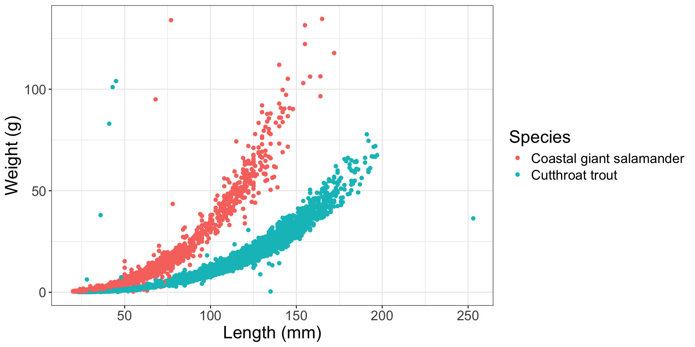
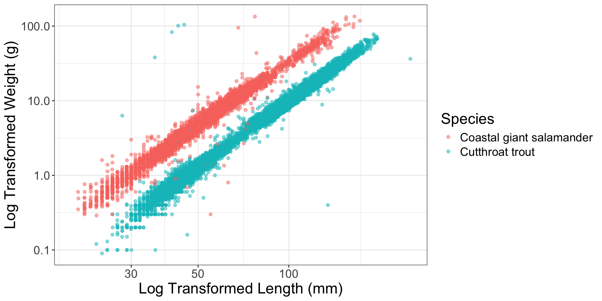
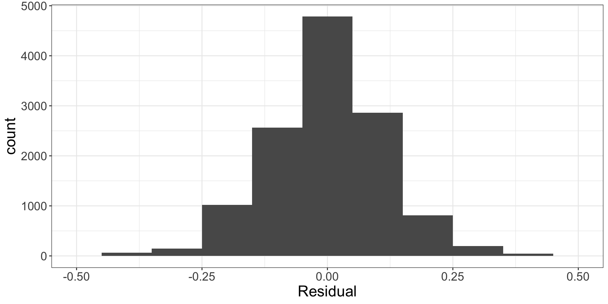

evals_small <- evals %>%
group_by(prof_ID) %>%
slice_sample(n = 1)🔬 Simulation-Based Methods versus Theory-Based Methods
Lab 6 Recap
Common Mistakes
Technically, you told me the name of the object that contains the model you decided was best. I want you to tell me the name of the variable(s) included in that model!
Stating what object had the best model (e.g., one_credits) but not stating what variable(s) were chosen (e.g., cls_credits).
At every stage, you are required to state every variable included in your “best” model!
The conclusions we reach depend on our p-value and confidence intervale being reliable.
The conclusions we reach depend on our p-value and confidence intervale being reliable.
How can we know if they are reliable?
Model Conditions
For our p-value and confidence interval to be trustworthy, we need to know that the conditions of our model are not violated.
For linear regression we are assuming…
Linear relationship between \(x\) and \(y\)
Independent observations (or residuals)
Normality of residuals
Equal variance of residuals
What happens if the conditions are violated?
In general, when the conditions associated with these methods are violated, we will underestimate the true standard error (spread) of the sampling distribution.
- Our p-values will be too small!
- Our confidence intervals will be too narrow!
- We will make more Type I errors than we expect!
What is a Type I error?
Linear relationship between \(x\) and \(y\)
What should we do?
Variable transformation!
Independence of observations
The evals dataset contains 463 observations on 94 professors. Meaning, professors have multiple observations.
What should we do?
Best – use a random effects model
Reasonable – collapse the multiple scores into a single score
Collapsing Multiple Scores
Option 1: Grab a Random Eval
| ID | prof_ID | score | age | bty_avg | gender | ethnicity | language | rank | pic_outfit | pic_color | cls_did_eval | cls_students | cls_level |
|---|---|---|---|---|---|---|---|---|---|---|---|---|---|
| 2 | 1 | 4.1 | 36 | 5.000 | female | minority | english | tenure track | not formal | color | 86 | 125 | upper |
| 5 | 2 | 4.6 | 59 | 3.000 | male | not minority | english | tenured | not formal | color | 17 | 20 | upper |
| 8 | 3 | 4.1 | 51 | 3.333 | male | not minority | english | tenured | not formal | color | 55 | 55 | upper |
| 10 | 4 | 4.5 | 40 | 3.167 | female | not minority | english | tenured | not formal | color | 40 | 46 | upper |
| 22 | 5 | 4.6 | 31 | 7.333 | female | not minority | english | tenure track | not formal | color | 52 | 59 | upper |
| 29 | 6 | 4.9 | 62 | 5.500 | male | not minority | english | tenured | formal | color | 166 | 286 | upper |
| 34 | 7 | 4.2 | 33 | 4.167 | female | not minority | english | tenure track | not formal | color | 29 | 41 | upper |
| 36 | 8 | 3.4 | 51 | 4.000 | female | not minority | english | tenured | not formal | color | 25 | 41 | upper |
| 48 | 9 | 4.7 | 33 | 4.667 | female | not minority | english | tenure track | not formal | color | 42 | 48 | upper |
| 54 | 10 | 5.0 | 47 | 5.500 | male | not minority | english | teaching | not formal | color | 10 | 11 | lower |
| 61 | 11 | 3.7 | 35 | 4.833 | male | minority | non-english | tenure track | not formal | color | 30 | 33 | upper |
| 64 | 12 | 4.2 | 37 | 4.333 | male | not minority | english | teaching | not formal | color | 13 | 21 | upper |
| 69 | 13 | 4.2 | 42 | 4.833 | male | not minority | english | tenured | not formal | color | 18 | 30 | upper |
| 78 | 14 | 3.6 | 49 | 4.000 | male | not minority | non-english | tenured | not formal | color | 23 | 27 | upper |
| 80 | 15 | 3.3 | 37 | 5.500 | female | not minority | english | tenure track | not formal | color | 34 | 52 | upper |
| 86 | 16 | 4.4 | 45 | 4.167 | male | not minority | english | tenured | not formal | color | 27 | 32 | upper |
| 93 | 17 | 4.3 | 56 | 2.500 | female | not minority | english | teaching | not formal | color | 27 | 32 | upper |
| 94 | 18 | 4.0 | 48 | 4.333 | male | not minority | english | teaching | not formal | color | 100 | 135 | lower |
| 103 | 19 | 5.0 | 46 | 4.333 | female | not minority | english | tenured | not formal | black&white | 14 | 15 | lower |
| 116 | 20 | 3.4 | 57 | 4.333 | female | not minority | english | teaching | not formal | color | 14 | 20 | upper |
| 121 | 21 | 3.7 | 52 | 4.833 | female | not minority | english | teaching | not formal | color | 19 | 22 | upper |
| 127 | 22 | 3.4 | 29 | 2.833 | female | minority | non-english | tenure track | not formal | color | 19 | 26 | upper |
| 132 | 23 | 3.6 | 62 | 3.000 | male | not minority | english | tenured | not formal | color | 61 | 164 | lower |
| 133 | 24 | 4.5 | 64 | 4.167 | male | not minority | english | tenured | not formal | color | 15 | 24 | upper |
| 140 | 25 | 4.8 | 34 | 7.833 | female | not minority | english | tenure track | not formal | color | 20 | 26 | upper |
| 142 | 26 | 4.4 | 58 | 3.833 | male | not minority | english | tenured | not formal | color | 84 | 159 | upper |
| 149 | 27 | 4.8 | 52 | 4.833 | male | minority | non-english | tenured | formal | color | 12 | 16 | upper |
| 156 | 28 | 3.7 | 73 | 3.000 | male | not minority | english | tenured | formal | color | 16 | 21 | upper |
| 160 | 29 | 4.1 | 70 | 3.000 | male | not minority | english | tenured | formal | color | 34 | 64 | upper |
| 162 | 30 | 2.3 | 41 | 5.167 | female | not minority | english | tenure track | not formal | color | 10 | 12 | upper |
| 163 | 31 | 4.3 | 63 | 4.333 | male | not minority | english | teaching | not formal | color | 28 | 43 | upper |
| 170 | 32 | 4.9 | 47 | 2.667 | male | not minority | english | tenured | not formal | color | 10 | 15 | upper |
| 177 | 33 | 4.4 | 39 | 5.500 | male | not minority | english | tenured | not formal | color | 27 | 29 | upper |
| 188 | 34 | 3.4 | 47 | 4.333 | female | minority | english | tenure track | not formal | color | 25 | 27 | lower |
| 192 | 35 | 4.1 | 54 | 2.333 | male | not minority | english | tenured | formal | color | 10 | 15 | upper |
| 195 | 36 | 3.5 | 44 | 6.500 | female | minority | english | tenured | not formal | color | 35 | 48 | upper |
| 205 | 37 | 3.3 | 47 | 2.333 | male | minority | english | tenured | not formal | color | 15 | 17 | upper |
| 215 | 38 | 4.7 | 60 | 3.667 | male | not minority | english | tenured | not formal | color | 31 | 45 | upper |
| 217 | 39 | 3.3 | 37 | 6.167 | male | not minority | english | tenure track | not formal | color | 15 | 17 | upper |
| 222 | 40 | 4.7 | 42 | 4.000 | male | not minority | english | tenure track | not formal | color | 13 | 15 | upper |
| 224 | 41 | 4.8 | 35 | 4.833 | male | not minority | english | tenured | not formal | color | 21 | 23 | lower |
| 228 | 42 | 4.7 | 39 | 8.167 | female | not minority | english | teaching | not formal | color | 18 | 23 | upper |
| 232 | 43 | 4.1 | 49 | 6.500 | male | not minority | english | tenured | formal | color | 27 | 42 | upper |
| 235 | 44 | 4.6 | 61 | 4.833 | male | not minority | english | tenured | formal | color | 31 | 38 | upper |
| 239 | 45 | 3.1 | 33 | 7.000 | male | not minority | english | tenure track | formal | color | 12 | 13 | upper |
| 241 | 46 | 3.7 | 58 | 4.667 | female | not minority | english | tenured | formal | black&white | 26 | 34 | upper |
| 242 | 47 | 3.9 | 56 | 3.833 | female | not minority | english | tenured | formal | color | 12 | 19 | upper |
| 251 | 48 | 4.4 | 50 | 3.167 | female | not minority | english | teaching | not formal | color | 23 | 29 | upper |
| 259 | 49 | 4.8 | 52 | 3.167 | male | not minority | english | tenured | not formal | color | 22 | 23 | upper |
| 266 | 50 | 4.9 | 33 | 5.833 | female | not minority | english | tenure track | not formal | black&white | 10 | 10 | upper |
| 272 | 51 | 4.4 | 57 | 5.667 | male | not minority | english | tenured | not formal | black&white | 36 | 41 | upper |
| 275 | 52 | 4.8 | 38 | 6.500 | female | not minority | english | tenured | formal | black&white | 46 | 65 | upper |
| 284 | 53 | 4.0 | 34 | 1.667 | female | not minority | english | tenure track | not formal | color | 53 | 90 | lower |
| 289 | 54 | 4.1 | 34 | 6.667 | male | not minority | english | tenure track | not formal | color | 16 | 20 | upper |
| 293 | 55 | 3.8 | 32 | 3.667 | male | not minority | english | tenure track | formal | black&white | 98 | 247 | lower |
| 295 | 56 | 4.7 | 32 | 3.833 | male | not minority | english | tenure track | formal | black&white | 72 | 103 | upper |
| 297 | 57 | 4.1 | 42 | 6.167 | female | not minority | english | tenured | not formal | color | 51 | 82 | upper |
| 301 | 58 | 4.4 | 43 | 3.333 | female | not minority | english | tenured | not formal | color | 28 | 37 | lower |
| 309 | 59 | 3.6 | 35 | 3.667 | male | not minority | non-english | tenure track | not formal | black&white | 22 | 42 | lower |
| 311 | 60 | 3.3 | 62 | 3.500 | female | not minority | english | tenured | not formal | color | 9 | 16 | upper |
| 313 | 61 | 4.2 | 42 | 2.667 | male | not minority | english | tenured | not formal | color | 45 | 86 | upper |
| 314 | 62 | 4.5 | 39 | 5.667 | male | not minority | english | tenured | not formal | color | 22 | 29 | upper |
| 315 | 63 | 3.8 | 52 | 6.000 | female | not minority | english | tenured | formal | black&white | 64 | 88 | upper |
| 318 | 64 | 4.0 | 52 | 6.500 | female | not minority | english | tenured | not formal | black&white | 49 | 65 | upper |
| 321 | 65 | 3.8 | 52 | 2.333 | female | not minority | english | teaching | not formal | color | 35 | 43 | upper |
| 329 | 66 | 2.7 | 64 | 2.333 | male | not minority | english | tenured | not formal | color | 18 | 22 | upper |
| 334 | 67 | 3.7 | 50 | 7.167 | male | not minority | english | tenured | not formal | color | 9 | 10 | upper |
| 337 | 68 | 2.5 | 60 | 1.667 | male | not minority | english | tenured | not formal | color | 10 | 16 | upper |
| 338 | 69 | 3.0 | 51 | 5.167 | female | not minority | english | tenured | formal | color | 47 | 67 | upper |
| 340 | 70 | 4.8 | 43 | 3.500 | male | not minority | english | tenure track | not formal | color | 15 | 28 | lower |
| 356 | 71 | 5.0 | 50 | 3.333 | male | minority | english | teaching | not formal | color | 20 | 21 | lower |
| 362 | 72 | 4.2 | 52 | 5.833 | male | not minority | english | tenured | not formal | color | 29 | 40 | upper |
| 368 | 73 | 4.9 | 51 | 6.167 | male | not minority | english | tenured | formal | color | 322 | 527 | lower |
| 370 | 74 | 4.5 | 38 | 3.333 | male | not minority | english | tenured | not formal | color | 66 | 84 | lower |
| 374 | 75 | 3.6 | 47 | 5.167 | female | not minority | english | tenured | formal | color | 38 | 67 | lower |
| 375 | 76 | 3.7 | 43 | 4.167 | female | minority | english | tenured | formal | color | 47 | 103 | lower |
| 377 | 77 | 4.5 | 38 | 2.500 | female | not minority | english | teaching | not formal | color | 33 | 68 | lower |
| 384 | 78 | 4.5 | 43 | 4.333 | male | not minority | english | tenured | formal | color | 8 | 13 | lower |
| 387 | 79 | 4.3 | 57 | 3.000 | male | not minority | english | tenured | not formal | color | 7 | 13 | upper |
| 392 | 80 | 3.1 | 51 | 6.333 | female | not minority | english | tenured | not formal | color | 36 | 56 | upper |
| 396 | 81 | 4.9 | 45 | 3.333 | male | not minority | english | teaching | not formal | color | 13 | 19 | lower |
| 399 | 82 | 3.6 | 57 | 2.833 | male | not minority | english | tenured | not formal | black&white | 12 | 18 | lower |
| 411 | 83 | 4.6 | 47 | 6.667 | female | not minority | english | teaching | not formal | black&white | 10 | 10 | lower |
| 414 | 84 | 4.2 | 54 | 6.833 | female | minority | english | tenured | not formal | black&white | 18 | 18 | lower |
| 423 | 85 | 4.6 | 58 | 7.833 | male | not minority | english | teaching | not formal | black&white | 19 | 20 | lower |
| 427 | 86 | 4.9 | 42 | 7.833 | male | not minority | english | tenured | not formal | black&white | 15 | 18 | lower |
| 430 | 87 | 4.5 | 33 | 5.833 | male | not minority | english | tenure track | not formal | color | 85 | 120 | lower |
| 438 | 88 | 3.0 | 62 | 2.000 | male | not minority | english | tenured | not formal | color | 67 | 136 | lower |
| 441 | 89 | 3.7 | 35 | 7.833 | female | minority | english | tenure track | not formal | color | 43 | 108 | lower |
| 443 | 90 | 4.3 | 61 | 3.333 | male | not minority | english | tenured | not formal | color | 13 | 15 | lower |
| 445 | 91 | 4.9 | 52 | 4.500 | female | not minority | english | tenured | not formal | color | 14 | 17 | lower |
| 452 | 92 | 3.4 | 60 | 4.333 | female | not minority | non-english | tenure track | formal | black&white | 7 | 20 | upper |
| 458 | 93 | 4.1 | 32 | 6.833 | male | not minority | english | tenure track | not formal | color | 9 | 21 | lower |
| 462 | 94 | 4.4 | 42 | 5.333 | female | minority | non-english | tenure track | not formal | color | 54 | 66 | upper |
Collapsing Multiple Scores
Option 2: Summarize the Evals
| ID | prof_ID | min_score | age | bty_avg | gender | ethnicity | language | rank |
|---|---|---|---|---|---|---|---|---|
| 1 | 1 | 3.9 | 36 | 5.000 | female | minority | english | tenure track |
| 5 | 2 | 2.8 | 59 | 3.000 | male | not minority | english | tenured |
| 8 | 3 | 3.4 | 51 | 3.333 | male | not minority | english | tenured |
| 10 | 4 | 3.8 | 40 | 3.167 | female | not minority | english | tenured |
| 18 | 5 | 4.5 | 31 | 7.333 | female | not minority | english | tenure track |
| 24 | 6 | 4.4 | 62 | 5.500 | male | not minority | english | tenured |
| 31 | 7 | 3.5 | 33 | 4.167 | female | not minority | english | tenure track |
| 36 | 8 | 2.5 | 51 | 4.000 | female | not minority | english | tenured |
| 43 | 9 | 4.4 | 33 | 4.667 | female | not minority | english | tenure track |
| 50 | 10 | 4.0 | 47 | 5.500 | male | not minority | english | teaching |
| 60 | 11 | 3.6 | 35 | 4.833 | male | minority | non-english | tenure track |
| 63 | 12 | 3.5 | 37 | 4.333 | male | not minority | english | teaching |
| 68 | 13 | 3.8 | 42 | 4.833 | male | not minority | english | tenured |
| 75 | 14 | 3.5 | 49 | 4.000 | male | not minority | non-english | tenured |
| 79 | 15 | 2.9 | 37 | 5.500 | female | not minority | english | tenure track |
| 83 | 16 | 4.1 | 45 | 4.167 | male | not minority | english | tenured |
| 89 | 17 | 3.6 | 56 | 2.500 | female | not minority | english | teaching |
| 94 | 18 | 4.0 | 48 | 4.333 | male | not minority | english | teaching |
| 102 | 19 | 4.3 | 46 | 4.333 | female | not minority | english | tenured |
| 111 | 20 | 3.3 | 57 | 4.333 | female | not minority | english | teaching |
| 121 | 21 | 3.5 | 52 | 4.833 | female | not minority | english | teaching |
| 127 | 22 | 3.4 | 29 | 2.833 | female | minority | non-english | tenure track |
| 128 | 23 | 3.6 | 62 | 3.000 | male | not minority | english | tenured |
| 133 | 24 | 4.3 | 64 | 4.167 | male | not minority | english | tenured |
| 140 | 25 | 4.1 | 34 | 7.833 | female | not minority | english | tenure track |
| 142 | 26 | 3.6 | 58 | 3.833 | male | not minority | english | tenured |
| 147 | 27 | 3.5 | 52 | 4.833 | male | minority | non-english | tenured |
| 154 | 28 | 3.6 | 73 | 3.000 | male | not minority | english | tenured |
| 158 | 29 | 3.6 | 70 | 3.000 | male | not minority | english | tenured |
| 162 | 30 | 2.3 | 41 | 5.167 | female | not minority | english | tenure track |
| 163 | 31 | 3.4 | 63 | 4.333 | male | not minority | english | teaching |
| 170 | 32 | 3.2 | 47 | 2.667 | male | not minority | english | tenured |
| 173 | 33 | 3.9 | 39 | 5.500 | male | not minority | english | tenured |
| 178 | 34 | 2.8 | 47 | 4.333 | female | minority | english | tenure track |
| 191 | 35 | 4.1 | 54 | 2.333 | male | not minority | english | tenured |
| 194 | 36 | 3.5 | 44 | 6.500 | female | minority | english | tenured |
| 198 | 37 | 3.3 | 47 | 2.333 | male | minority | english | tenured |
| 209 | 38 | 4.4 | 60 | 3.667 | male | not minority | english | tenured |
| 217 | 39 | 3.3 | 37 | 6.167 | male | not minority | english | tenure track |
| 218 | 40 | 4.3 | 42 | 4.000 | male | not minority | english | tenure track |
| 223 | 41 | 4.3 | 35 | 4.833 | male | not minority | english | tenured |
| 227 | 42 | 3.3 | 39 | 8.167 | female | not minority | english | teaching |
| 231 | 43 | 4.0 | 49 | 6.500 | male | not minority | english | tenured |
| 234 | 44 | 4.5 | 61 | 4.833 | male | not minority | english | tenured |
| 238 | 45 | 3.1 | 33 | 7.000 | male | not minority | english | tenure track |
| 241 | 46 | 3.7 | 58 | 4.667 | female | not minority | english | tenured |
| 242 | 47 | 3.2 | 56 | 3.833 | female | not minority | english | tenured |
| 245 | 48 | 3.4 | 50 | 3.167 | female | not minority | english | teaching |
| 252 | 49 | 3.5 | 52 | 3.167 | male | not minority | english | tenured |
| 265 | 50 | 4.5 | 33 | 5.833 | female | not minority | english | tenure track |
| 271 | 51 | 4.2 | 57 | 5.667 | male | not minority | english | tenured |
| 275 | 52 | 4.6 | 38 | 6.500 | female | not minority | english | tenured |
| 282 | 53 | 3.8 | 34 | 1.667 | female | not minority | english | tenure track |
| 288 | 54 | 3.5 | 34 | 6.667 | male | not minority | english | tenure track |
| 291 | 55 | 3.8 | 32 | 3.667 | male | not minority | english | tenure track |
| 294 | 56 | 4.4 | 32 | 3.833 | male | not minority | english | tenure track |
| 296 | 57 | 3.8 | 42 | 6.167 | female | not minority | english | tenured |
| 298 | 58 | 3.0 | 43 | 3.333 | female | not minority | english | tenured |
| 308 | 59 | 3.6 | 35 | 3.667 | male | not minority | non-english | tenure track |
| 310 | 60 | 2.9 | 62 | 3.500 | female | not minority | english | tenured |
| 313 | 61 | 4.2 | 42 | 2.667 | male | not minority | english | tenured |
| 314 | 62 | 4.5 | 39 | 5.667 | male | not minority | english | tenured |
| 315 | 63 | 3.7 | 52 | 6.000 | female | not minority | english | tenured |
| 317 | 64 | 3.7 | 52 | 6.500 | female | not minority | english | tenured |
| 320 | 65 | 3.8 | 52 | 2.333 | female | not minority | english | teaching |
| 327 | 66 | 2.7 | 64 | 2.333 | male | not minority | english | tenured |
| 333 | 67 | 3.7 | 50 | 7.167 | male | not minority | english | tenured |
| 335 | 68 | 2.4 | 60 | 1.667 | male | not minority | english | tenured |
| 338 | 69 | 3.0 | 51 | 5.167 | female | not minority | english | tenured |
| 339 | 70 | 4.4 | 43 | 3.500 | male | not minority | english | tenure track |
| 348 | 71 | 4.5 | 50 | 3.333 | male | minority | english | teaching |
| 358 | 72 | 3.5 | 52 | 5.833 | male | not minority | english | tenured |
| 364 | 73 | 4.8 | 51 | 6.167 | male | not minority | english | tenured |
| 369 | 74 | 3.9 | 38 | 3.333 | male | not minority | english | tenured |
| 373 | 75 | 3.6 | 47 | 5.167 | female | not minority | english | tenured |
| 375 | 76 | 2.7 | 43 | 4.167 | female | minority | english | tenured |
| 377 | 77 | 3.6 | 38 | 2.500 | female | not minority | english | teaching |
| 383 | 78 | 3.7 | 43 | 4.333 | male | not minority | english | tenured |
| 387 | 79 | 3.5 | 57 | 3.000 | male | not minority | english | tenured |
| 390 | 80 | 3.1 | 51 | 6.333 | female | not minority | english | tenured |
| 394 | 81 | 4.2 | 45 | 3.333 | male | not minority | english | teaching |
| 398 | 82 | 3.4 | 57 | 2.833 | male | not minority | english | tenured |
| 409 | 83 | 3.3 | 47 | 6.667 | female | not minority | english | teaching |
| 414 | 84 | 3.8 | 54 | 6.833 | female | minority | english | tenured |
| 419 | 85 | 4.6 | 58 | 7.833 | male | not minority | english | teaching |
| 427 | 86 | 3.9 | 42 | 7.833 | male | not minority | english | tenured |
| 430 | 87 | 4.5 | 33 | 5.833 | male | not minority | english | tenure track |
| 432 | 88 | 2.8 | 62 | 2.000 | male | not minority | english | tenured |
| 439 | 89 | 3.3 | 35 | 7.833 | female | minority | english | tenure track |
| 442 | 90 | 3.6 | 61 | 3.333 | male | not minority | english | tenured |
| 444 | 91 | 4.1 | 52 | 4.500 | female | not minority | english | tenured |
| 447 | 92 | 3.4 | 60 | 4.333 | female | not minority | non-english | tenure track |
| 454 | 93 | 4.1 | 32 | 6.833 | male | not minority | english | tenure track |
| 460 | 94 | 3.5 | 42 | 5.333 | female | minority | non-english | tenure track |
Equal variance of residuals

What should we do?
Variable transformation!

Normality of residuals

What should we do?
Variable transformation!
What if we can’t fix a condition being violated?
For the L, I, and E conditions…
we need to ask for help!
For the N condition…
we need to use simulation instead of mathematical formulas to get our p-value and confidence interval.
Simulation-Based Methods versus Theory-Based Methods
Mathematical / Theory-based Methods
- Are a “simpler” approach
- Use formulas instead of simulation to obtain standard error
- Use a named distribution (e.g., \(t\)-distribution) to get p-value and confidence interval
- Require that the residuals are normally distributed
How does this look?
bty_avg
0.06663704 How did R calculate the \(t\)-statistic?
\(SE_{b_1} = \frac{\frac{s_y}{s_x} \cdot \sqrt{1 - r^2}}{\sqrt{n - 2}}\)
[1] 0.01495204\(t = \frac{b_1}{SE_{b_1}} = \frac{0.067}{0.014952} = 4.4809947\)
# A tibble: 2 × 7
term estimate std_error statistic p_value lower_ci upper_ci
<chr> <dbl> <dbl> <dbl> <dbl> <dbl> <dbl>
1 intercept 3.88 0.076 51.0 0 3.73 4.03
2 bty_avg 0.067 0.016 4.09 0 0.035 0.099How does R calculate the p-value?

Different \(t\)-distributions
A \(t\)-distribution has a slightly different shape depending on the sample size. In simple linear regression, we are using a \(t\)-distribution with \(n - 2\) degrees of freedom to get our p-value. In multiple linear regression, this becomes $n - $ the # of unique slopes and intercepts.
Did we get similar results between these methods?
Did we get similar results between these methods?
Why do you think that is?
Approximating the permutation distribution
A \(t\)-distribution can be a reasonable approximation for the permutation distribution if the normality condition is not violated.

Your next tasks…
- Complete the grade check-in activity
- Learn about ANOVA in the context of multiple linear regression
- Use an ANOVA to decide what model you would have chosen for the midterm project (Statistical Critique #2)
- Revise Lab 6